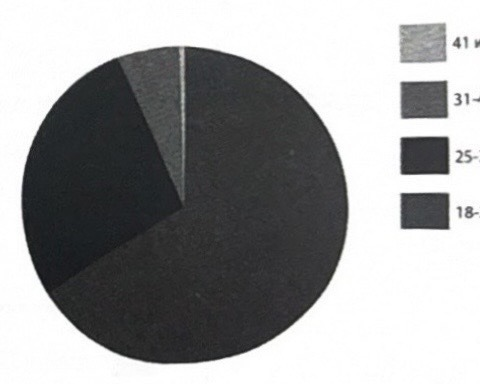
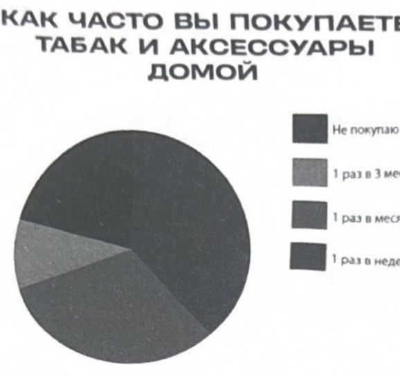
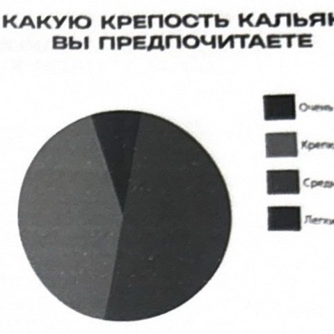
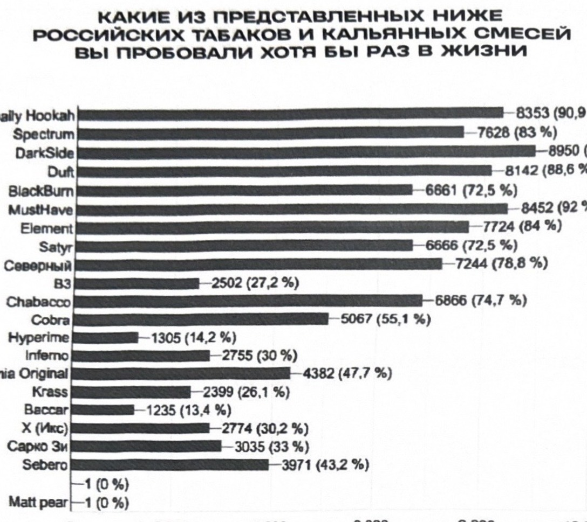
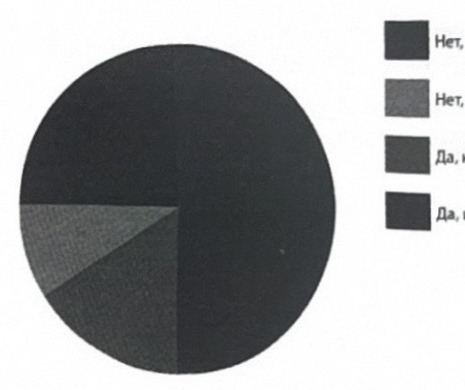
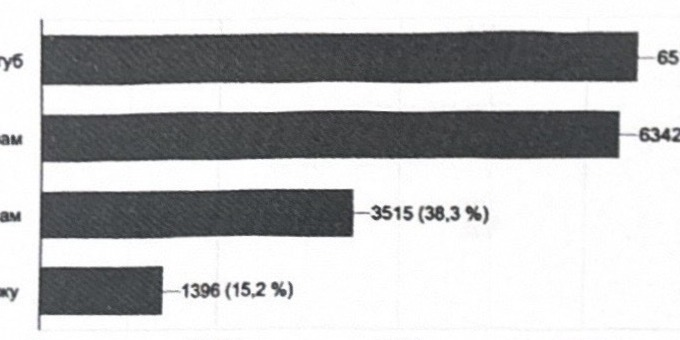

マーケティング調査「私たちは誰か」
私たちは誰か？
2020年の初め、私は初めてシーシャの能動的な消費者層に関するマーケティング調査を行いました。
- この記事は、ウファ市で開催されたフォーラム「Прокачаем（プロカチャエム／スキルアップしよう）」での私の講演です。出席者の反応から、このテーマが興味を持たれ、求められているものだと理解しました。「モチベートし、支配し、楽しめ」——これがこの講義のタイトルでした。このテキストには、私の経験をまとめ、私たちが実践で用い、その成功を示してきた事例を挙げるよう努めました。もちろん、これは完全なリストではありません。そして、もしあなたがこれを補完できるのであれば、私にはあなたにとって素晴らしいニュースがあります——あなたは立ち止まることなく、飛躍的なスピードで成長しているということです。各項目の終わりには、それを実生活でどう実現するかの例を挙げていきます。
性別
- 女性
- 男性
年齢
- 41歳以上
- 31〜40歳
- 25〜30歳
- 18〜24歳

あなたはシーシャ（の道具）を持っていますか
どのくらいの頻度でタバコやアクセサリーを自宅用に購入しますか
- 購入しない
- 3ヶ月に1回
- 月に1回
- 週に1回

どのくらいの期間シーシャを吸っていますか
- 1年未満
- 10年以上
- 1〜2年
- 2〜4年
- 5〜10年
学歴
- 高等教育中退
- 中等教育
- 高等教育を取得中
職業（活動）
- 働いていない
- トップマネージャー
- フリーランス
- 中間管理職
- 事業オーナー
- 学生
- 専門職（スペシャリスト）
どのくらいの頻度でシーシャを吸いますか
- 月に1回
- 週に1回
- 週に5本まで
- 1日に1本以上
あなたの収入はどのくらいですか
- 300（千ルーブル）以上
- 150〜300
- 100〜150
- 50〜100
- 30〜50
- 16〜30
- 15未満
どの強さのシーシャを好みますか
- 強い
- 中くらい
- 弱い

シーシャを作るあなたのスキルを1から10で評価してください
- 70（0.8%）
- 31（0.3%）
- 80（1%）
- 206（2.2%）
- 1067（12.2%）
シーシャ以外に何か吸いますか
- IQOS（アイコス）およびその他の類似品: 2611（28%）
- 1006（10.9%）
- 25.9%
- 紙巻きタバコ: 1389（15.1%）
- 983（10.7%）
- 手巻きタバコ: 459（5%）
- ドハ（アラブのパイプタバコ）: 917（10%）
- 6077（66.1%）
- 吸わない
- 葉巻およびシガリロ: 716（7.8%）
- 372（4%）
下に挙げたロシア産のタバコおよびシーシャ用ミックスのうち、人生で一度でも試したことがあるものはどれですか
- Daily Hookah: 8353（90.9%）
- Spectrum: 7628（83%）
- DarkSide: 8950（97.4%）
- Duft: 8142（88.6%）
- BlackBurn: 6661（72.5%）
- MustHave: 8452（92%）
- Element: 7724（84%）
- Satyr: 6666（72.5%）
- Северный（セヴェルヌイ）: 7244（78.8%）
- B3: 2502（27.2%）
- Chabacco: 6866（74.7%）
- Cobra: 5067（55.1%）
- Hyperime（Inferno）: 1305（14.2%）
- Virginia Original: 2755（30%）
- Krass: 4382（47.7%）
- Baccar: 2399（26.1%）
- 1235（13.4%）
- X（Mxc）: 2774（30.2%）
- Сарко（サルコ）: 3035（33%）
- Sebero: 3971（43.2%）
- Matt pear: 1（0%）

下に挙げた輸入シーシャ用タバコのうち、人生で一度でも試したことがあるものはどれですか
- AlFakher: 8811（95.9%）
- Adalya: 8800（95.8%）
- Afzal: 8354（90.9%）
- Nakhla: 8282（90.1%）
- Fumari: 8253（89.8%）
- Tangiers: 8199（89.2%）
- Azure: 4170（45.4%）
- Serbetli: 8584（93.4%）
- Malaki: 4147（45.1%）
- Starbuzz: 5798（63.1%）
- Al-Waha: 3146（34.2%）
- Mazaya: 2892（31.5%）
- Nirvana: 4365（47.5%）
- Zomo: 1470（16%）
ノンタバコのシーシャ用ミックスを吸いますか
- いいえ
- はい
どの方向性の味（香り）を好みますか
- ベリー: 6785／73%
- フルーツ: 6112／66.5%
- 柑橘類: 4714／51.3%
- デザート: 3902／42.5%
- 茶: 3762／40.9%
- スパイス: 3762／40.9%
- 花: 1949／21.2%
これまでにシーシャ業界で働いたことがありますか
- いいえ、私はただシーシャを吸うのが好きなだけです
- いいえ、でも働きたいです
- はい、でももう働いていません
- はい、そして今も働いています

シーシャに関連した健康上の問題があったことはありますか
スポーツをしていますか
- いいえ、していません
- はい、不定期かつ不規則に
- はい、定期的に
- いいえ
シーシャに合わせてどの飲み物を好みますか
- アルコール: 8145（88.6%）
- 2214（24.1%）
- レモネード
- 炭酸飲料
- 水: 5072（55.2%）
- 3261（35.5%）
- コーヒー: 1650（18%）
- 5474（59.6%）
シーシャ系ブロガーをフォローしていますか
- はい、YouTubeで: 6512（71%）
- はい、Instagramで: 6342（69.1%）
- はい、Telegramで: 1396（15.2%）
- いいえ、フォローしていません: 3515（38.3%）

シーシャ関連のイベントに参加していますか
- はい、教育的なイベント: 3006（40.3%）
- はい、大規模な展示会: 2120（23.1%）
- はい、ローカルなテイスティング: 2008（29.4%）
本書の制作に参加したメンバー
- プロジェクト著者: パーヴェル・サヴィノフ（Павел Савинов）
- 編集者: アレクセイ・ルミャンツェフ（Алексей Румянцев）
- 表紙デザイン: マックス・ポポフ（Макс Попов）
- 組版および校正: ナスチャ・ニコラエワ（Настя Николаева）／デザインスタジオ LUPO
記事の執筆者
- ドミトリー・ズデルマン（Дмитрий Зудерман）
- エフゲニー・フェドートフ（Евгений Федотов）
- キリル・オフチンニコフ（Кирилл Овчинников）
- イリヤ・ロマノフ（Илья Романов）
- イリヤ・コブザレフ（Илья Кобзарев）
- ヴラド・パニューチン（Влад Панютин）
- ドミトリー・フングレエフ（Дмитрий Хунгуреев）
- マックス・ポポフ（Макс Попов）
- ロマン・クレツ（Роман Крецу）
- アルチョム・フロポフ（Артем Хлопов）
- キリル・グレベンニコフ（Кирилл Гребенников）
- アンドレイ・トゥルケヴィチ（Андрей Туркевич）
- ドミトリー・トレハ（Дмитрий Треха）
- アレクサンドル・ツヴィルコ（Александр Цвирко）
- ミハイル・プロホロフ（Михаил Прохоров）
- デニス・シヴァチェンコ（Денис Сиваченко）
- アンドレイ・レシ（Андрей Лесь）
- アルチョム・バエフ（Артем Баев）
- チモフェイ・コレエフ（Тимофей Кореев）
- ウラジーミル・デネシキン（Владимир Денежкин）
- サーシャ・Nuahule
- ダーニャ・ヴァシリエフ（Даня Васильев）
3年間にわたり、Telegramチャンネル「savinov says（サヴィノフ・セイズ）」で大きな人気を集めました。シーシャ、喫煙、ラウンジについて——著者は努めました。〔これは〕知識、経験、そして時間からのエッセンスです。
読み終えた後、あなたは少し違った考え方をするようになるでしょう。
著者について
パーヴェル・サヴィノフ（Павел Савинов）
2018年から業界に在籍。Telegramチャンネル「savinov says」の著者。
プロジェクト
- NunGroup——シーシャラウンジおよびショップのネットワーク
- 教育フォーラム「Прокачаем（プロカチャエム）」
- ブランド「Хулиган（フリガン／ならず者）」——シーシャ、タバコ
- 国際経験 15ヶ国
- シーシャマスターのための賞「б…」